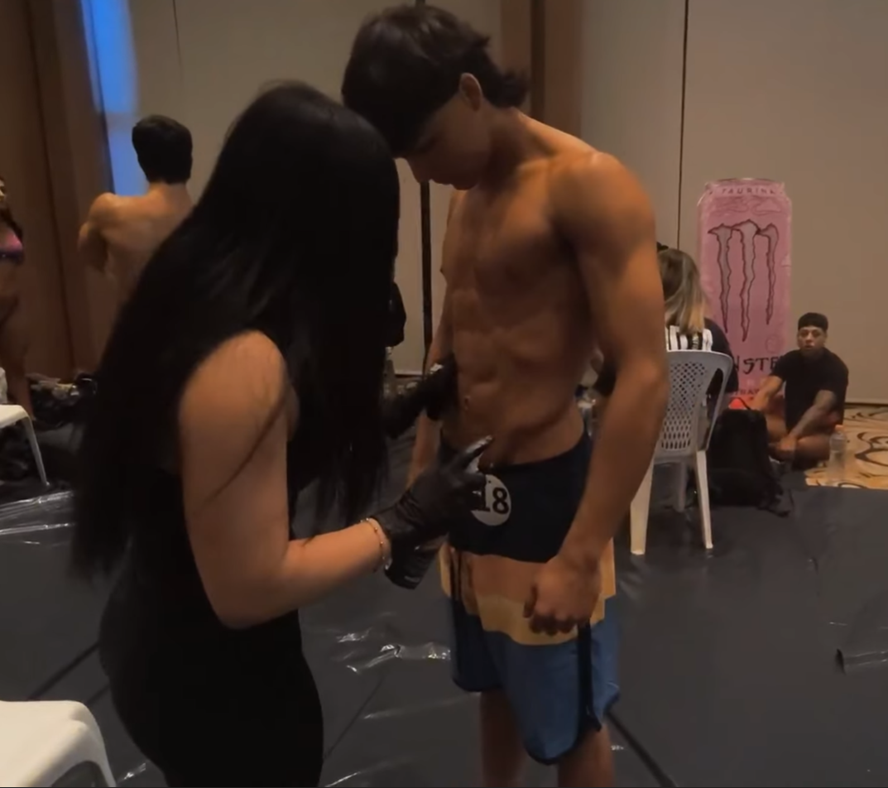
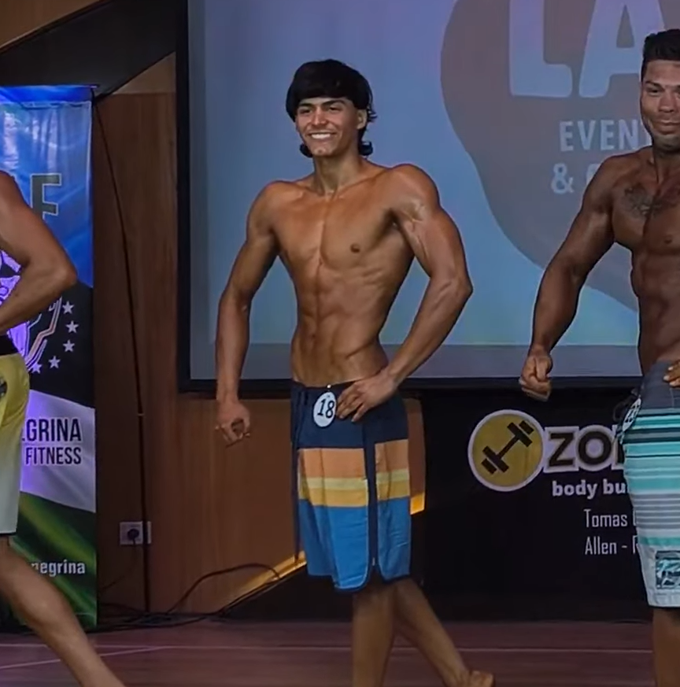
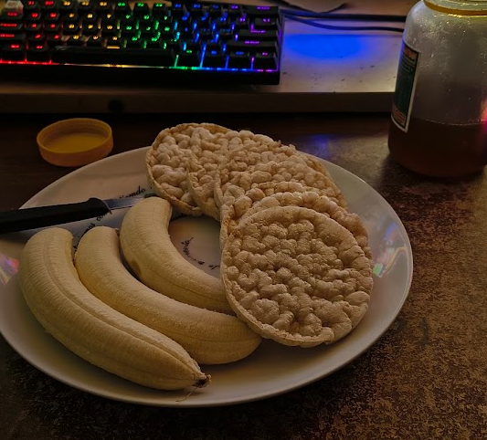
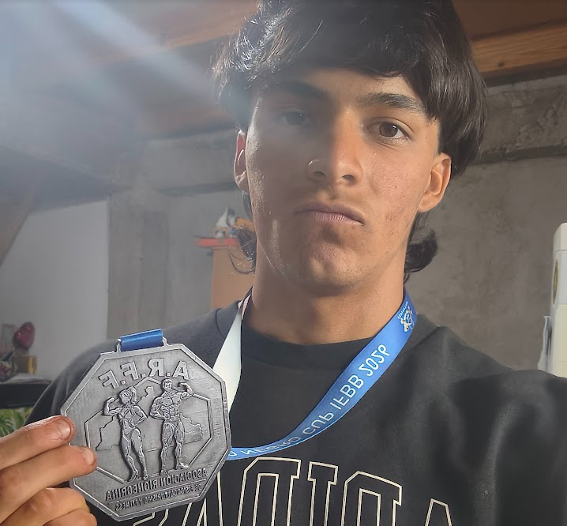

Mi charla
Por qué el fisicoculturismo es lo que es.

1. Introducción
Soy Leandro Ahumada, más conocido como leoofitt, y hace poco debuté en la Río Negro IFBB Cup. Salí primero en Novice y segundo en el Overall, en Men's Physique. Para mí el fisicoculturismo no es solo subirse a un escenario. Es lo que me gusta hacer todos los días y lo que me tiene la cabeza ocupada casi todo el tiempo.

2. Disciplina y constancia
Lo que se ve arriba del escenario son unos minutos, pero atrás hay meses de laburo que nadie ve. Entrenar cuando tenés ganas y también cuando no, comer lo que toca aunque tengas ganas de otra cosa, y repetirlo semana tras semana. No se trata de motivación, porque la motivación va y viene. Lo que te hace avanzar es la disciplina, y para mí eso fue lo más difícil de aprender.

3. Alimentación y descanso
En este deporte tenés que cuidar todo lo que le das al cuerpo. Lo que comés, cuándo lo comés y cuánto dormís cambia tu físico tanto como el entrenamiento. Dormir bien y descansar es parte del proceso. Muchos creen que crecés en el gimnasio, pero en realidad crecés cuando descansás. Aprendí a organizar mis comidas y mis horarios como parte de mi rutina.

4. Estilo de vida
El fisicoculturismo es un deporte de tiempo completo. Mientras entrenás, mientras comés, mientras dormís y hasta cuando estás haciendo otra cosa, estás pensando en tu objetivo. Por eso para mí es un estilo de vida y no solo un deporte. Me enseñó a ser constante y a ser paciente, y todavía estoy aprendiendo. Esto recién empieza.
Puntos clave
Punto 1
Se paciente y repite lo mismo todos los dias.
Punto 2
Recorda porque empezaste.
Punto 3
NUnca te rindas, van a ver dias dificiles pero es parte de la preparacion, lo importante es que nunca dejes de hacer lo que mas te gusta.